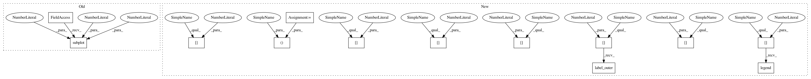

24d6f5e42d775949e191122091826eefa7bf1246,docs/examples/plot_superflux.py,,,#,31
Before Change
sr=sr,
hop_length=hop_length)
ax = plt.subplot(2, 1, 2)
librosa.display.specshow(librosa.power_to_db(S, ref=np.max),
y_axis="mel", x_axis="time", sr=sr,
hop_length=hop_length, fmin=fmin, fmax=fmax)
plt.xlim([0, 5.0])
After Change
n_mels=n_mels)
fig, ax = plt.subplots()
librosa.display.specshow(librosa.power_to_db(S, ref=np.max),
y_axis="mel", x_axis="time", sr=sr,
hop_length=hop_length, fmin=fmin, fmax=fmax, ax=ax)
////////////////////////////////////////////////////////////////////////////////////////////////////////////////////////////////
// Now we"ll compute the onset strength envelope and onset events
// using the librosa defaults.
odf_default = librosa.onset.onset_strength(y=y, sr=sr, hop_length=hop_length)
onset_default = librosa.onset.onset_detect(y=y, sr=sr, hop_length=hop_length,
units="time")
//////////////////////////////////////////////////////////////////////////////////
// And similarly with the superflux method
odf_sf = librosa.onset.onset_strength(S=librosa.power_to_db(S, ref=np.max),
sr=sr,
hop_length=hop_length,
lag=lag, max_size=max_size)
onset_sf = librosa.onset.onset_detect(onset_envelope=odf_sf,
sr=sr,
hop_length=hop_length,
units="time")
////////////////////////////////////////////////////////////////////////////////////////////////////////////////////////////////////////////
// If you look carefully, the default onset detector (top sub-plot) has
// several false positives in high-vibrato regions, eg around 0.62s or
// 1.80s.
//
// The superflux method (middle plot) is less susceptible to vibrato, and
// does not detect onset events at those points.
// sphinx_gallery_thumbnail_number = 2
fig, ax = plt.subplots(nrows=3, sharex=True)
frame_time = librosa.frames_to_time(np.arange(len(odf_default)),
sr=sr,
hop_length=hop_length)
librosa.display.specshow(librosa.power_to_db(S, ref=np.max),
y_axis="mel", x_axis="time", sr=sr,
hop_length=hop_length, fmin=fmin, fmax=fmax, ax=ax[2])
ax[2].set(xlim=[0, 5.0])
ax[0].plot(frame_time, odf_default, label="Spectral flux")
ax[0].vlines(onset_default, 0, odf_default.max(), label="Onsets")
ax[0].legend()
ax[0].label_outer()
ax[1].plot(frame_time, odf_sf, color="g", label="Superflux")
ax[1].vlines(onset_sf, 0, odf_sf.max(), label="Onsets")
ax[1].legend()
ax[0].label_outer()
In pattern: SUPERPATTERN
Frequency: 3
Non-data size: 13
Instances
Project Name: librosa/librosa
Commit Name: 24d6f5e42d775949e191122091826eefa7bf1246
Time: 2020-06-27
Author: bmcfee@users.noreply.github.com
File Name: docs/examples/plot_superflux.py
Class Name:
Method Name:
Project Name: librosa/librosa
Commit Name: 24d6f5e42d775949e191122091826eefa7bf1246
Time: 2020-06-27
Author: bmcfee@users.noreply.github.com
File Name: docs/examples/plot_superflux.py
Class Name:
Method Name:
Project Name: librosa/librosa
Commit Name: 24d6f5e42d775949e191122091826eefa7bf1246
Time: 2020-06-27
Author: bmcfee@users.noreply.github.com
File Name: docs/examples/plot_viterbi.py
Class Name:
Method Name:
Project Name: librosa/librosa
Commit Name: 24d6f5e42d775949e191122091826eefa7bf1246
Time: 2020-06-27
Author: bmcfee@users.noreply.github.com
File Name: docs/examples/plot_pcen_stream.py
Class Name:
Method Name: